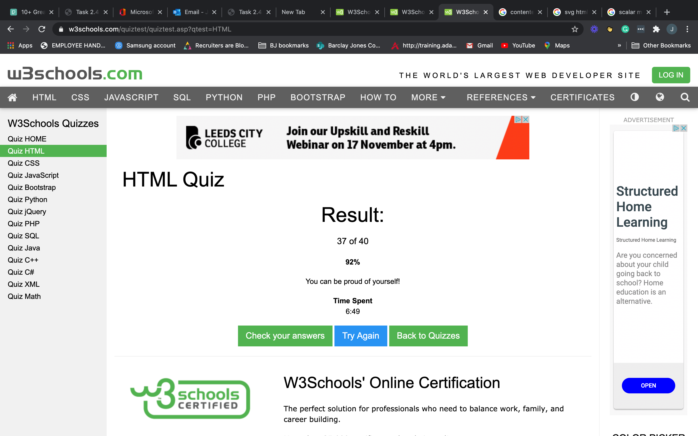

Thursday's session was tricky but I felt a sense of acheivement by the time we got to the end of the session.
I enjoyed the lession, but it remnided me that I am at the beginning of my learning and there's still a long way to go.
I took the
quiz and got 31/40.
The lession worked better in smaller groups. We learned more complex CSS stuff and some times I got confused about which bits to put in the html and which bits to put in the CSS stlyesheet.
Having said that, i'm surprised by how much I do know. It all seems to be coming together.
We had the homework to check out html html entities on google. I read entities
I discovered how to make this copyright symbol ©
This session we learned a lot about CSS and HTML and putting it all together. The lessons are definitely more complex but when I think back to where we started I'm amazed by how much I know.
Struggled to complete the 2.4.4 task. I couldn't get the css to work properly with the task. e.g. the image wasnt reducing in size. Ended up redoing - in my own time and it worked fine. retook the W3 test and got 37/40.
I completed this offline as I was sick on thursday. Found it easy to follow but coulnt work out how to get task 6 to work the way i wanted it to - gives me the wrong figure. I'll wait for Luke's demo to work out where I went wrong.
JavaScript feel complicated and easy at the same time. I need to put some more time into practicing and getting to grips with how it all slots together.
Finally getting to grips with how all this is working. I feel like there's loads i;ve forgotten but i really just need to practice. I've been ill so the orcatice hasnt been as frequent as i'd have liked.
I did these sessikons by following the recording asI was off with Covid - found it really useful and really getting to grips with JavaScript.
Really enjoyed tonights session - I know we're at the begining of the journey but - it felt more complex. It was really good to be able to put HTML, CSS & JavaScript all together (even though it was only a tiny bit)